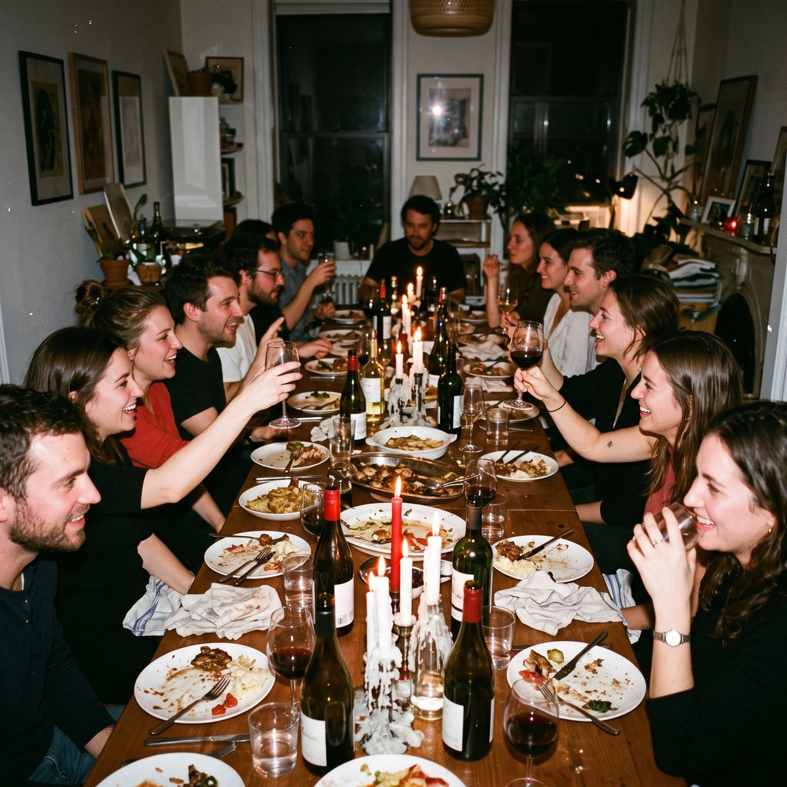
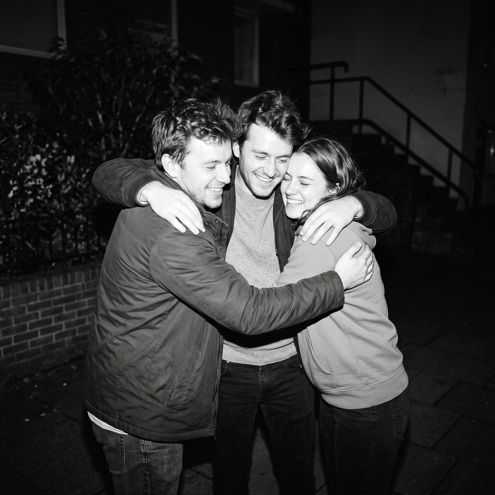

Before the factory
Life was organized around family, faith, the city and the seasons. Work was part of a day, not the whole of a life. A Roman citizen spent the afternoon in the baths, the forum and the theater.

Anthropos Cities · Now meeting founding investors
Self-sustaining cities for the age of superintelligence: energy, water, food and services produced by the city itself, so its people can return to what work took from them.
Rome gave the world the forum, the bath, the theater and the stadium. The factory took them away. Superintelligence will give them back.
For most of history, a free life was lived in public: arguing in the forum, training in the gymnasium, bathing, making art, governing the city. The Industrial Revolution traded that life for a wage. Anthropos is a bet that the trade is about to be reversed.
Two hundred years ago we left the fields and the forums for the factory. We learned to live by the clock, to commute, to call ourselves by our jobs. Superintelligence and abundant energy can end that arrangement. We are building the first cities designed for what comes after it.
Life was organized around family, faith, the city and the seasons. Work was part of a day, not the whole of a life. A Roman citizen spent the afternoon in the baths, the forum and the theater.
The steam engine moved people from the land to the mill. Time began to belong to the clock. Cities were built around jobs, families scattered to follow wages, and a person became what they did for a living. We still live inside that arrangement.
Machines and superintelligence can now run what the factory needed us for. An Anthropos city makes its own energy from the sun, its own water from the sea, its own food from autonomous farms, and runs its services with intelligent systems. The city works so its citizens don’t have to.
Freed from labor, we return to what Rome understood: the forum, the bath, the theater, the gymnasium, the academy. A life measured by excellence, beauty, friendship and the common good. Not leisure. Purpose.
The superintelligence economy is about to create more wealth, and more free time, than any economy in history. Almost nobody is building the places where that life will be lived.
Intelligent systems are automating knowledge and service work faster than any previous technology. Millions of people will need a new answer to how and where to live.
The founders, engineers and investors of this economy are accumulating unprecedented wealth, and they are looking for places worth belonging to.
As wealth grows, exceptional land with a living culture becomes the scarcest asset of all. A city with a soul cannot be copied.
Anthropos holds the master plan, the brand and the community, and earns across the whole life of the city.
The master plan is designed for a Pacific coastline with hills, a river and a sheltered bay. Candidate sites are under evaluation and will be presented to investors in the briefing.
Founders, artists, musicians, athletes and scholars, living side by side. Dinners that run late, music in the courtyards, the sea every morning, an argument in the forum every afternoon. This is the life the city is designed around, and the reason people will move to it.


Concept imagery of life in Anthropos.
One billion dollars builds the first city from bare land to a living place. Capital comes in as the risk goes down, through a regulated structure in which each investor’s share of the project company is recorded as a digital token.
A project company owns the land, the buildings and the income of the first city.
Its equity is divided into tokens, issued and registered by a regulated platform after identity checks.
Capital waits in escrow and is released as land, permits, infrastructure and homes are delivered.
Income from homes, hospitality and city services flows back to holders, who can transfer their tokens after the holding period.
When the work that once filled a human life can be done by machines, a people may choose what to do with the life that is returned to them. We choose to build.
We hold that a life is not measured by its output; that the city exists for its citizens and not for its economy; and that every generation is free to found the institutions its age makes possible.
For two centuries our cities were organized around the factory and the office. They taught us to live by the clock, to scatter our families after wages, and to name ourselves by our jobs. That order is ending.
We, the founding citizens of Anthropos, declare our intent to build self-sustaining cities: cities that make their own energy, water and food, run their services with intelligent systems, and give their people the time that labor took.
We look back to Rome not for its conquests but for its forum, its baths, its theaters and its schools: the rooms where free people became excellent together. We mean to build those rooms again.
Signed by the founding citizens of Anthropos, in the year two thousand and twenty-six.
Read the draft charter →We are meeting a small group of founding investors, family offices and strategic partners. Register your interest to receive the briefing: the master plan, the candidate sites, the financial model and the structure of the raise.